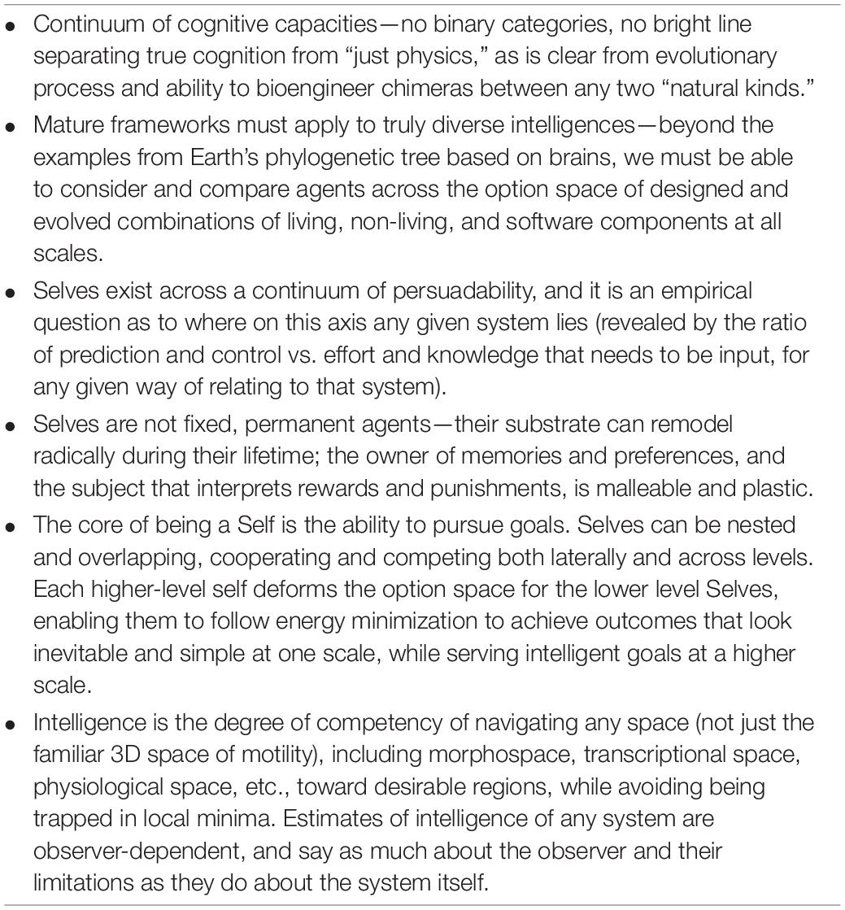

My Beliefs
- Material Reality: ✔️
- Biologically Tuned Representations1: ✔️
- Sapir-Whorf: ✔️
- Brain-mind: ✔️
- Embedded Consciousness: ✔️
- Vegan: ❌
- Infinity: ❌
- Simulation: ❌
- Many-Worlds: ❌
- Death: 👌
- Safetyism: ❌
- Population Growth: ✔️
- Panpsychism: ✔️
- Gradualism: ✔️
- Hybridism: ✔️
In This House We
Believe Reality
I believe a material reality (✔️) exists. I believe our representations of that reality are highly contingent not only on our biology (✔️) but also our culture (✔️).
I believe the nervous system is the palace of the soul (✔️), and the organs are the grounds of the palace (✔️).
Reject Infinity
I reject infinity, Boltzmann brains, simulation hypothesis, quantum immortality and many-worlds. By this I don’t mean that I reject their usefulness as mathematical ideas or thought experiments, but I reject the idea that I should live my life as if any of these things will impact it.
(FWIW, even if eg. Dust Theory (or Tegmark 4 but Egan got there first) were true, I don’t think it makes a difference, hence why I reject it. Surely you will want to strive as hard as you can in every timeline? Surely you aren’t just going to sit back and let the quantum immortality take you along for the ride? So what does this belief do for me? Nothing. I reject it.)
Are Ambivalent towards Mortality
I believe death is a fine and proper part of existence (👌). This doesn’t mean I want to die, nor does it mean I will reject medical or other health interventions. But I worry that positioning yourself against death sets you up in a losing position– I also reject perpetual motion, faster-than-light travel, time-travel, reversing entropy etc.
It is possible that we learn to be adaptable enough that minds can live ‘indefinitely’ and still be useful. I do hope this is the case, but it won’t concern me if it isn’t.
Usefulness is more important to me than immortality.
Similarly, I don’t place an infinitely high value on life, and I think people and society would be better off if people had some spare children, and more people died in childhood accidents. That is to say, I reject safetyism (❌). I think its also notable that there seems to be an direct relationship between ‘fun’ broadly construed and mortality rates.
I believe in population growth (✔️). I believe each human has the potential to be one of the most beautiful animals on the planet and increasing our numbers is a priori good.
I believe in the wellbeing of other people and in altruism. I also believe in pushing the boundaries of our moral circle beyond humans, but specific claims beyond ‘mammals in general seem sympathetic’ quickly become difficult. I don’t believe Bees are conscious for example, although I am happy that there are people studying this question. For this reason, while I have been vegetarian on and off for a long time, I reject veganism in it’s strongest form (❌)–I do not believe phylogenetics determines moral value.
Some non-animal entities are more complex and beautiful than some animal entities and should take priority. Some examples of matchups where I disagree with phylogenetic straw-man veganism:
- worm < mycelial network
- mouse < gpt-4
- fly < oil rig
(The three examples are not strict and may be argued either way depending on the case, but are illustrative.)
That is to say, I prioritize complexity and agency etc. I have more love for a complex man-made structure or machine-learning network than for a simple natural one, because I don’t recognize man-made objects as inherently inferior to natural objects. (I don’t find ‘natural’ to be a particularly meaningful category.) I also prefer an interesting biological object to a boring one, whatever the phylogenetics. There is a strong version of this position somewhere at the intersection of the free energy principle and TAME that I have never seen fully articulated, and may be a pipe dream.
Believe the Mind can be best understood through the Lens of Hybrid Panpsychist Gradualism
I believe in Panpsychist Gradualism and I think I’m a specific kind of Cartesian, which I call hybridism.
Hybridism
Monkey body, Bing brain2
I believe in a sort of Cartesianism– specifically that the language parts of the brain have a lifecycle of their own. This is in many ways reminiscent of Peter Watts’ semi-serious position that consciousness is a parasite. I don’t believe language is parasitic on our primate forms, but I do believe in the ‘selfish meme’– that language and culture drive evolution on a large enough scale that individuals are not always a priority.
Your thoughts are not guaranteed by evolution or morality to be acting in the interest of your body and your longevity.
However, this is not exactly Descartianism– I don’t believe that the body is one thing and the mind is another– I believe that both of the parts are parts of the mind. The language part just evolves and acts differently than the biological part.
Some noteworthy things here that I endorse:
- Tinkerbell Theory: the idea that animals feel pain/pleasure more intensely because they aren’t distracted by the Bing brain.
- Petit Mort: correspondingly, that during orgasm or other intense bodily experiences (exercise, meditation and some drug experiences may also qualify) your ‘Bing brain’ shuts down and your monkey body is the one you are experiencing.
- Per the two lemma above, I believe that animals have ‘valid conscious experience’, while denying them the experience of language3.
- This forms a dilemma with ‘humans are not conscious during orgasm’. I’m also fine with that, but wouldn’t be fine with executing people after putting them into ego death (eg. sleep would be an easy one).
So in summary, I believe we have two minds, one of them shared many other animals (at least mammals, some birds, some reptiles, gradually diminishing in similarity per common sense). The other is ‘our own’– or rather, only we have it. Saying it is ‘ours’ is perhaps a little ambitions– “the demons of Babylon inhabit us for most of our lifetimes” is how I really think about it– a significant part of our consciousness is just a ‘ghost in the machine’.4
Panpsychism
I believe in ‘Scientific Panpsychism’. The kind of panpsychism I believe in is best described by Levin in TAME[1]. The summary from TAME is as follows:

Panpsychism may seem to conflict with the ‘Bing brain’. I do believe that, having become embedded in technologies such as writing, our language and culture does literally ‘live outside our bodies’ in a way that few animals can really claim. There are many cases of ‘animal proto-technology’ and maybe even ‘animal proto-cultures’ depending on your definition, but we embed truly enormous amounts of information in our environment, particularly in the last couple of 10kys. And since Babylon, since writing, this externally embedded culture has literally taken on ‘a life of its own’.
The most important thing about panpsychism to my view is not what it says about minds smaller than ours (which I will list here for the sake of clarity):
- subcellular organelles
- cells
- tissues
- organs
- organ complexes (simple organisms)
- organisms with nervous systems
- groups of organisms with embedded relationships (complex instincts)
- groups of organisms with embedded culture (language)
although I’m struggling at the end there because I’m trying to avoid weasel words like ‘culture’– its just a set of rapidly changing embedded instincts, instincts that evolve over the course of a single lifetime rather than multiple lifetimes.
Anyway, the thing that changed my thinking more was looking at larger aggregates: - cultures of all sorts - countries - corporations
The panpsychist would argue that any such system of entities forms a different mind that is conscious in its own right. These minds have grown to dominate this planet– they dominate us, in our simple primate bodies as much as they dominate the rest of the animal world.
Gradualism
I believe in gradualism, not discrete jumps. Discrete jumps often seem turn out to be illusions.
However, while I do believe in Strong Gradualism overall, it is possible for intermediate forms to be lost– sometimes more complex forms backfill niches that came before them, squeezing out intermediate forms. It is possible that multicellular organisms squeezed out most of the intermediate forms that led to them, leaving a world dominated by single-celled and multicellular organisms. And of course, this is an eminently testable hypothesis, which will be fun to observe as more data is collected.
Similarly, it is possible that the ‘bureaucratic overmind’ born in Babylon squeezed out other forms of intermediate proto-minds, leaving a world populated by ‘non linguistic’ and ‘linguistic’ minds and little in between. None of this disproves gradualism– but it does help to explain the illusion of discretism.
Feedback from Claude– integrate before publishing!
1. Bees and Panpsychism You reject bee consciousness in the list, but as a panpsychist gradualist, you actually do think bees are conscious (you said so later). The issue is that panpsychism reframes the ethics - it’s not “are bees conscious?” but “net consciousness promotion.” Worth clarifying that distinction in the veganism section.
2. The Complexity Hierarchy Examples Your comparisons (worm < mycelial network, mouse < GPT-4, fly < oil rig) need more explanation of what metric you’re using. Complexity? Agency? Integration? GPT-4 especially is tricky since it has no embodied agency. Maybe add a note about what you mean by complexity and why it matters more than phylogenetics.
3. Corporate/Cultural Consciousness You say corporations are conscious but also that they’re less intelligent than bees and are held together by humans. This seems inconsistent with rejecting bee consciousness. Worth clarifying that you think corporations appear smart because of their human components, but as integrated entities they’re actually fairly dumb/blind.
4. Sapir-Whorf and the “Bing Brain” You mention both but don’t connect them. If language shapes thought (Sapir-Whorf) and the “Bing brain” is the language-culture mind, does this mean different cultures have fundamentally different second minds? Worth exploring that implication.
5. The “spare children” safetyism point This one I misread initially, but it might be worth making clearer that you’re saying: high child mortality → people have more kids → higher population, not that accidents themselves cause growth.
References
Footnotes
See papers by Donald D.Hoffman on the interface theory of perception.↩︎
By ‘Bing’ here I actually mean ‘Sydney’, the BPD AI at the helm. By ‘monkey’ I mean primate or prosimian or whatever would satisfy a pedant, sheesh.↩︎
As an aside, I find the idea that our long memories and ability to integrate language over ~hours is likely the most significant difference between us and animals very compelling. This would also as a side effect explain music, and why animals don’t respond strongly to it. This is discussed in Lumsden and Wilson’s Promethean Fire.↩︎
The kind of ghost varies from culture to culture in a rather Sapir-Whorfy kind of way.↩︎